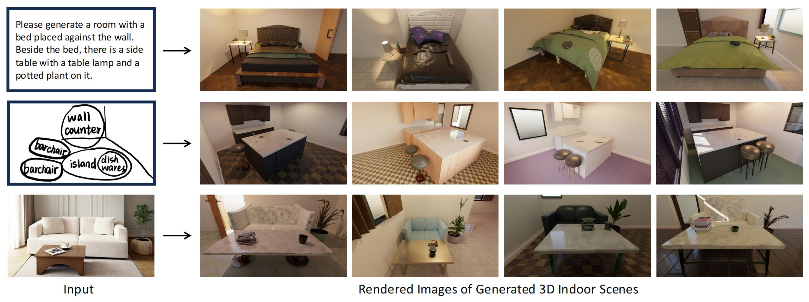
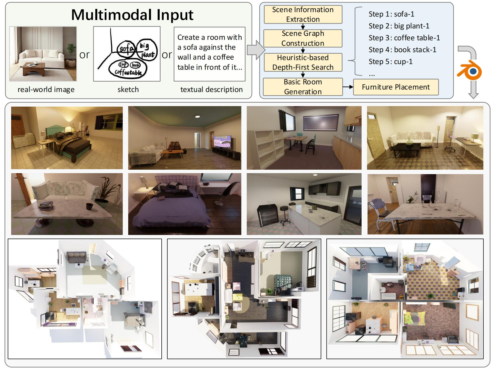
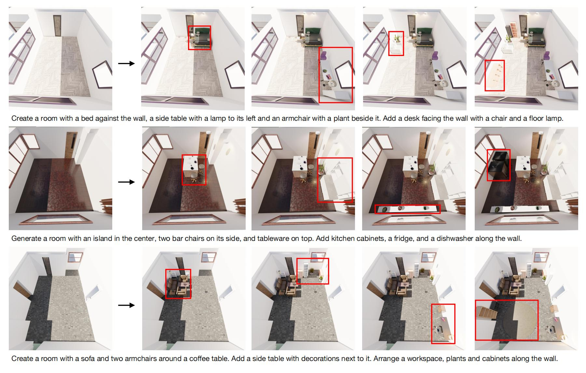

Abstract
Generating realistic 3D indoor scenes is a fundamental challenge in the field of Artificial General Intelligence (AGI), as it requires balancing geometric consistency, physical interactivity, and visual realism. While implicit generation methods, including diffusion-based and LLM-based approaches, have made promising strides, they often struggle with issues such as repetitive elements and unrealistic layouts due to a lack of global context. To address these issues, we propose RoomCraft, an explicit generation method that converts the provided real images, sketches, or text descriptions into realistic 3D indoor scenes. RoomCraft integrates a multi-stage interactive generation pipeline that extracts high-level scene information from user inputs and organizes it into a structured format. Then it constructs a spatial relationship network to represent furniture positions and generates a task list using a heuristic-based search to ensure layout coherence. Additionally, we introduce an adaptive layout optimization algorithm that balances spatial functionality and aesthetic appeal, dynamically adjusting to resolve conflicts and changes in layout. We demonstrate the effectiveness of RoomCraft through extensive experiments, showing that it outperforms existing methods in generating realistic, semantically coherent, and visually appealing room layouts.
The proposed SceneX can create large-scale 3D natural scenes or unbounded cities automatically according to user instructions.
The generated models are characterized by delicate geometric structures, realistic material textures, and natural lighting, allowing for seamless deployment in the industrial pipeline.
The PCG Planner framework
The PCG Planner framework comprises three essential components: the task planner, asset retrieval, and action execution. This framework empowers LLMs with the capabilities for task planning in complex scenarios, utilizing multiple API actions, and facilitating large-scale scene generation.
The proposed SceneX can create large-scale 3D natural scenes or unbounded cities automatically according to user instructions.
_00.jpg)
The generated models are characterized by delicate geometric structures, realistic material textures, and natural lighting, allowing for seamless deployment in the industrial pipeline.
The proposed SceneX can create large-scale 3D natural scenes or unbounded cities automatically according to user instructions.
Illustration results for our adaptive layout generation. Taking the first row as an example, our method effectively constructs a layout by progressively adding furniture according to the user input, such as a bed, side table, armchair, and desk, while intuitively maintaining spatial relationships to avoid overcrowding.